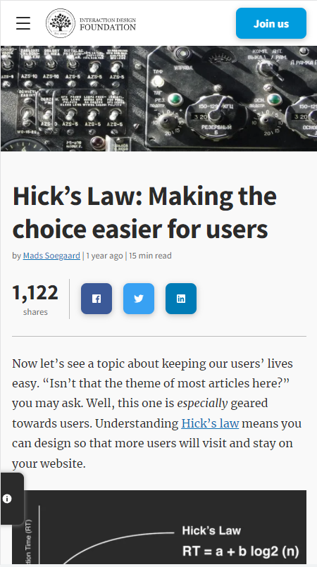
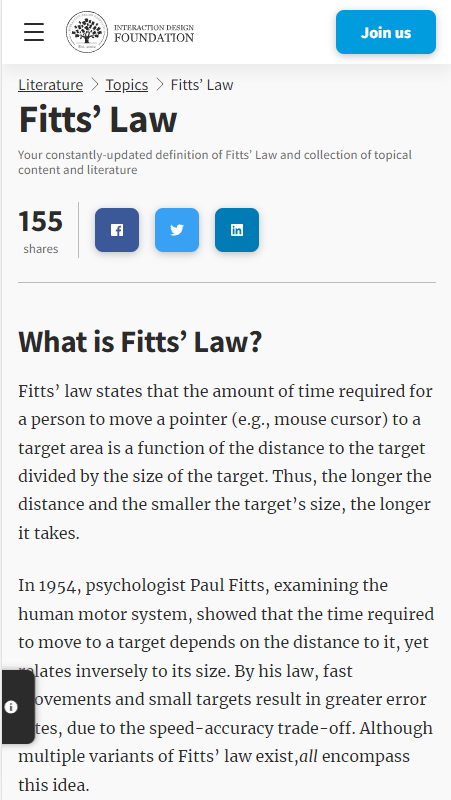
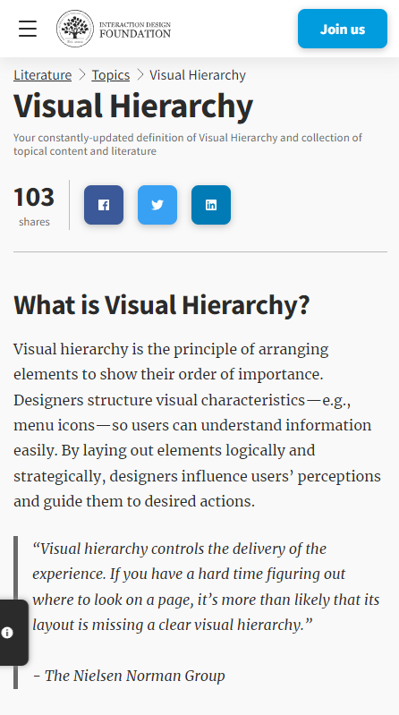

Hick's Law
Interaction Design Foundation
www.interaction-design.org
Hick’s Law (or the Hick-Hyman Law) is named after a British and an American psychologist team of William Edmund Hick and Ray Hyman. In 1952, this pair set out to examine the relationship between the number of stimuli present and an individual’s reaction time to any given stimulus. As you would expect, the more stimuli to choose from, the longer it takes the user to make a decision on which one to interact with. Users bombarded with choices have to take time to interpret and decide, giving them work they don’t want.
The formula for Hick’s Law is defined as follows: RT = a + b log2 (n) Where “RT” is the reaction time, “(n)” is the number of stimuli present, and “a” and “b” are arbitrary measurable constants that depend on the task that is to be carried out and the conditions under which it will be carried out. “A” could be finding the right present online for your mother-in-law; “B” could be an onscreen chat with your mother-in-law in which she reminds you it’s her birthday tomorrow.
Generally, the application of Hick’s Law is simple – reduce the number of stimuli and get a faster decision-making process — but there are exceptions to the rule. For example, a user may already have made a decision before seeing the stimuli. In that instance, the time it takes for him/her to act is likely to be less than if he/she had not already determined a course of action.
Fitt'
Interaction Design Foundation
www.interaction-design.org
Fitts’ law states that the amount of time required for a person to move a pointer (e.g., mouse cursor) to a target area is a function of the distance to the target divided by the size of the target. Thus, the longer the distance and the smaller the target’s size, the longer it takes.
In 1954, psychologist Paul Fitts, examining the human motor system, showed that the time required to move to a target depends on the distance to it, yet relates inversely to its size. By his law, fast movements and small targets result in greater error rates, due to the speed-accuracy trade-off. Although multiple variants of Fitts’ law exist,all encompass this idea.
Fitts’ law is widely applied in user experience (UX) and user interface (UI) design. For example, this law influenced the convention of making interactive buttons large (especially on finger-operated mobile devices)—smaller buttons are more difficult (and time-consuming) to click. Likewise, the distance between a user’s task/attention area and the task-related button should be kept as short as possible.
Visual Hierarchy
Interaction Design Foundation
www.interaction-design.org
Visual hierarchy is the principle of arranging elements to show their order of importance. Designers structure visual characteristics—e.g., menu icons—so users can understand information easily. By laying out elements logically and strategically, designers influence users’ perceptions and guide them to desired actions.
“Visual hierarchy controls the delivery of the experience. If you have a hard time figuring out where to look on a page, it’s more than likely that its layout is missing a clear visual hierarchy.” - The Nielsen Norman Group